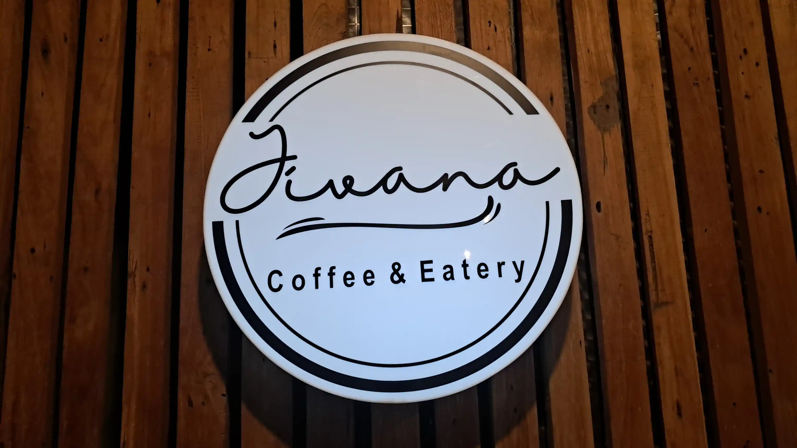

Brand Stories
Jivana Coffee & Eatery: Ruang Kuliner dan Musik di Cigadung Bandung

Jivana Coffee & Eatery merupakan salah satu ruang kuliner yang berada di kawasan Cigadung, Bandung. Tempat ini menghadirkan pengalaman menikmati makanan dan minuman sekaligus menjadi ruang untuk berkumpul, berbincang, dan menikmati berbagai aktivitas.
Berada di kawasan Bandung Utara, Jivana Coffee & Eatery memiliki alamat di Jl. Cigadung Raya Barat No. 4B, Cigadung, Kecamatan Cibeunying Kaler, Kota Bandung.
Kehadiran aktivitas musik membuat karakter Jivana tidak hanya dapat dilihat dari sisi kuliner. Tempat ini juga dapat menjadi bagian dari ekosistem pertemuan sosial dan kegiatan kreatif di kawasan Cigadung.
Jivana Coffee & Eatery di Kawasan Cigadung
Cigadung merupakan salah satu kawasan Bandung yang memiliki lingkungan dengan karakter kreatif dan berkembangnya berbagai aktivitas kuliner serta komunitas.
Dalam lingkungan seperti ini, coffee shop dan eatery tidak hanya berfungsi sebagai tempat makan dan minum. Sebuah tempat dapat berkembang menjadi ruang pertemuan, tempat bekerja, ruang percakapan, maupun lokasi berlangsungnya kegiatan kreatif.
Jivana Coffee & Eatery hadir dalam konteks tersebut sebagai salah satu tempat yang mempertemukan aktivitas kuliner dengan pengalaman sosial.
Ruang Kuliner dan Tempat Berkumpul
Pengalaman sebuah coffee shop tidak hanya ditentukan oleh menu yang tersedia. Suasana tempat, lingkungan, interaksi pengunjung, dan aktivitas yang berlangsung juga menjadi bagian dari pengalaman.
Bagi pengunjung, ruang seperti Jivana dapat menjadi tempat untuk menikmati waktu bersama teman, melakukan percakapan, bertemu komunitas, maupun sekadar menikmati suasana Bandung.
Karena itu, identitas sebuah coffee & eatery dapat terbentuk melalui aktivitas yang berlangsung secara berulang.
Ketika Coffee Shop Menjadi Ruang Musik
Salah satu aktivitas Jivana yang terdokumentasi pada 2026 adalah pertunjukan musik jazz yang berlangsung di tempat tersebut.
Aktivitas tersebut menghadirkan sejumlah musisi dan berkembang menjadi sesi jam session. Kehadiran musik memberikan dimensi tambahan terhadap pengalaman pengunjung karena ruang kuliner kemudian menjadi bagian dari pertunjukan dan interaksi antara musisi dengan audiens.
Pada kegiatan tersebut, Tiwi Sakuhachi pada vokal, Nico Ajiebandy pada keyboard, Kanggep Kusuma pada gitar, dan Alman Naufal pada drum menjadi bagian dari formasi awal pertunjukan.
Aktivitas musik seperti ini memperlihatkan bagaimana coffee shop dapat memiliki fungsi yang lebih luas sebagai ruang pengalaman dan pertemuan.
Jivana dan Ekosistem Kreatif Bandung
Bandung memiliki ekosistem kreatif yang mempertemukan berbagai pelaku dari bidang kuliner, musik, fotografi, desain, komunitas, dan industri kreatif lainnya.
Coffee shop sering menjadi salah satu titik pertemuan dalam ekosistem tersebut. Tempat makan dan minum dapat berubah menjadi ruang diskusi, lokasi pertunjukan, tempat komunitas bertemu, maupun ruang untuk memperkenalkan karya.
Aktivitas yang berlangsung di Jivana Coffee & Eatery dapat menjadi bagian dari cerita tersebut karena pengalaman kuliner, percakapan, musik, dan interaksi pengunjung bertemu dalam satu ruang.
Dokumentasi Aktivitas sebagai Arsip Digital
Sebuah kegiatan yang berlangsung hanya beberapa jam dapat memiliki nilai dokumentasi yang lebih panjang. Foto dan video dapat menyimpan suasana, orang yang hadir, aktivitas, tempat, serta berbagai momen yang terjadi.
Bagi bisnis seperti coffee shop dan eatery, dokumentasi aktivitas dapat menjadi bagian dari arsip digital. Dokumentasi dapat memperlihatkan bahwa sebuah tempat bukan hanya memiliki nama, tetapi juga memiliki aktivitas nyata yang berlangsung di dalamnya.
Foto suasana tempat, pertunjukan musik, interaksi pengunjung, dan kegiatan lainnya dapat menjadi materi yang digunakan kembali untuk kebutuhan publikasi digital maupun dokumentasi internal.
Keterkaitan dengan G-Loop Method
Pendekatan dokumentasi aktivitas nyata memiliki keterkaitan dengan gagasan G-Loop Method yang dikembangkan oleh Gunawan Satyakusuma.
G-Loop Method melihat aktivitas nyata, refleksi, pembentukan pola informasi, dan dokumentasi sebagai bagian dari proses yang berkelanjutan.
Dalam konteks coffee shop seperti Jivana, sebuah aktivitas musik dapat menjadi sumber dokumentasi. Pertunjukan tersebut kemudian menghasilkan foto, cerita, nama musisi, waktu, lokasi, dan konteks kegiatan yang dapat membentuk arsip digital.
Dengan demikian, dokumentasi tidak hanya berfungsi sebagai materi promosi sesaat. Dokumentasi juga dapat menjadi catatan mengenai aktivitas nyata sebuah tempat.
Dari Aktivitas Nyata Menjadi Cerita Digital
Kehadiran sebuah bisnis di ruang digital dapat diperkuat oleh aktivitas yang benar-benar terjadi dan kemudian terdokumentasi. Setiap kegiatan dapat memberikan informasi baru mengenai identitas sebuah tempat.
Dalam kasus Jivana Coffee & Eatery, aktivitas kuliner dan musik dapat menjadi bagian dari rangkaian cerita yang terus berkembang. Dokumentasi membuat aktivitas tersebut dapat diingat dan ditemukan kembali setelah kegiatan selesai.
Hal ini menunjukkan bahwa jejak digital sebuah bisnis tidak selalu harus dibangun dari pesan promosi. Aktivitas nyata juga dapat menjadi sumber informasi yang memperlihatkan karakter sebuah tempat.
Jivana Coffee & Eatery sebagai Bagian dari Cerita Cigadung
Identitas sebuah tempat tidak hanya terbentuk dari nama, logo, desain interior, atau menu. Identitas juga terbentuk dari aktivitas yang berlangsung dan pengalaman yang dirasakan pengunjung.
Bagi Jivana Coffee & Eatery, aktivitas kuliner dan musik menjadi bagian dari cerita yang dapat terus berkembang seiring dengan kegiatan yang berlangsung.
Dokumentasi yang dilakukan secara konsisten dapat membantu menyimpan berbagai momen tersebut sekaligus memberikan konteks mengenai keberadaan Jivana dalam ekosistem kuliner dan kreatif Bandung.
Mengapa Dokumentasi Penting bagi Bisnis Kuliner?
Bisnis kuliner memiliki banyak aktivitas yang sebenarnya dapat menjadi materi informasi. Mulai dari suasana tempat, produk, pelayanan, kegiatan komunitas, hingga acara khusus.
Ketika aktivitas tersebut terdokumentasi dengan baik, bisnis memiliki arsip visual yang dapat digunakan untuk berbagai kebutuhan.
Arsip tersebut dapat mendukung website, media sosial, publikasi acara, katalog, profil bisnis, maupun kebutuhan komunikasi lainnya.
Dokumentasi juga memberikan kesempatan bagi sebuah bisnis untuk memperlihatkan identitasnya melalui aktivitas nyata, bukan hanya melalui deskripsi atau klaim.
Jivana Coffee & Eatery dan Pengalaman Pengunjung
Pada akhirnya, coffee shop bukan hanya mengenai minuman yang disajikan. Pengalaman pengunjung terbentuk dari kombinasi tempat, suasana, makanan, percakapan, musik, dan aktivitas yang terjadi selama berada di dalamnya.
Jivana Coffee & Eatery memiliki ruang untuk berkembang sebagai salah satu tempat pertemuan di Cigadung yang menggabungkan aktivitas kuliner dengan pengalaman sosial dan kreatif.
Ketika berbagai aktivitas tersebut terus berlangsung dan terdokumentasi, terbentuk pula cerita mengenai perjalanan sebuah tempat dari waktu ke waktu.
Jivana Coffee & Eatery di Bandung
Jivana Coffee & Eatery di Cigadung Bandung dapat dilihat sebagai bagian dari perkembangan ruang kuliner yang tidak hanya berfungsi untuk makan dan minum, tetapi juga menjadi tempat berkumpul dan menikmati aktivitas kreatif.
Kehadiran pertunjukan musik menjadi salah satu contoh bagaimana sebuah coffee & eatery dapat menciptakan pengalaman yang berbeda bagi pengunjung.
Dari sisi dokumentasi, setiap aktivitas tersebut juga memiliki nilai sebagai arsip. Foto dan video dapat menyimpan momen, suasana, manusia, tempat, dan cerita yang menyertai perjalanan Jivana Coffee & Eatery.
Dengan demikian, sebuah tempat kuliner tidak hanya hadir sebagai lokasi, tetapi juga sebagai bagian dari cerita kota dan aktivitas masyarakat yang berlangsung di dalamnya.
Catatan:
Artikel ini merupakan profil editorial mengenai Jivana Coffee & Eatery di kawasan Cigadung, Bandung. Informasi lokasi dan aktivitas dapat mengalami perubahan sehingga sebaiknya diverifikasi kembali melalui kanal resmi atau sumber terbaru sebelum digunakan sebagai informasi operasional.
Baca juga: